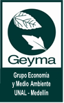

Mesas Temáticas 2024.
- Fintech, inclusión financiera y desarrollo económico en Latinoamérica.
- Bonos verdes, valoración de empresas y modelos de financiamiento sostenible.
- Gestión de riesgos, futuros, opciones y retornos sociales y ambientales.
- Simulación heurística y metaheurística, Machine Learning, Deep Learning y Big Data.
- Automatización de procesos, Blockchain, Lean & Green Manufacturing y logística inversa.
- Economía circular y productividad de la micro, pequeña y mediana empresa (MiPyme).
- Desarrollo de competencias 4.0 y 5.0, gestión del conocimiento y liderazgo digital.
- Inteligencia artificial aplicada a la toma de decisiones organizacionales.
- Ética en la era digital, cultura empresarial y competitividad en pymes.
- Innovación social e inclusiva, marketing digital, neuromarketing y endomarketing.
- Ecosistemas de innovación, incubación, aceleración y modelos de negocio disruptivos.
- Smart cities, sostenibilidad urbana y co-creación en iniciativas públicas y privadas.
Mesa 1:
Finanzas Sostenibles e Inversión de Impacto
Temas:
Fintech.
Inclusión financiera (personas y organizaciones).
Desarrollo económico en Latinoamérica.
Modelos y herramientas para el financiamiento sostenible.
Proyectos de inversión.
Futuros y opciones.
Gestión de riesgos.
Bonos verdes y sociales y otras alternativas de financiamiento sostenible para proyectos.
Valoración de empresas.
Generación de valor sostenible.
Valoración de retornos sociales y ambientales.
Modelos que consideran sostenibilidad ambiental y social.
Mesa 2:
Optimización de Procesos, Logística y Cadena de Suministro
Modelos de simulación heurística y metaheurística.
Machine learning.
Deep learning.
Big data y analítica de negocios.
Block chain.
Automatización de procesos.
Programación de producción.
Modelos predictivos.
Redes colaborativas y fortalecimiento de cadenas productivas.
Evaluación ex ante y ex post.
Lean y Green Manufacturing.
Optimización de la cadena de suministro.
Logística inversa y de resiliencia.
Valoración de residuos.
Economía circular.
Desarrollo de procesos y materiales innovadores y sostenibles.
Productividad de la Micro, pequeña y mediana empresa (MIPyME).
Mesa 3:
Talento Humano en Conexión con la Tecnología: potenciando el desarrollo humano y organizacional a partir de la apropiación de la tecnología
Gestión del talento humano.
Competitividad y productividad.
Gestión del conocimiento.
Desarrollo de competencias y habilidades 4.0 y 5.0.
Toma de decisiones.
Transformación digital.
Inteligencia artificial y toma de decisiones en las organizaciones.
Comunidades digitales y colaborativas: Impulsando la innovación abierta.
Ética y responsabilidad en la era digital.
Adaptación organizativa y cultura empresarial.
Liderazgo para la innovación y la transformación, transformación.
Desarrollo continuo de carrera y aprendizaje en la era digital.
Talento y competitividad en la pyme.
Gestión de Proyectos en ingeniería para el desarrollo organizacional y social.
Mesa 4:
Marketing, Innovación y Emprendimiento
Innovación social e inclusiva.
Marketing digital.
Marketing, social, cultural, sostenible e inclusivo.
Marketing para la inclusión financiera.
Co-creación en iniciativas sociales y públicas (modelos de organización, participación y comunicación).
Ecosistemas de innovación.
Incubación y aceleración de empresas.
Smart cities y sostenibilidad urbana.
Modelos de negocios disruptivos.
Emprendimiento e intraemprendimiento.
Ecosistemas de emprendimiento.
Neuromarketing.
Endomarketing.
Afiches, fotografías y registro visual (4)

Instituciones Organizadoras y Aliadas
 Universidad Nacional de Colombia
Universidad Nacional de Colombia

Grupo Geyma · UNAL Medellín Semillero PREXIA · UNAL
Semillero PREXIA · UNAL
 Facultad de Ciencias Agrarias · UNAL
Facultad de Ciencias Agrarias · UNAL
 UNESP · São Paulo, Brasil
UNESP · São Paulo, Brasil
 UNESP · Campus Jaboticabal
UNESP · Campus Jaboticabal
 Instituto A Nau Ciranda · Brasil
Instituto A Nau Ciranda · Brasil